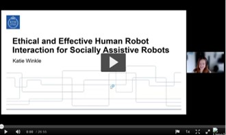

Katie Winkle
Since June 2022 I'm an assistant professor (biträdande universitetslektor) at the Department of Information Technology, Uppsala University in Sweden. Myself and my students are working on topics broadly relating to trustworthy human-robot interaction at the Uppsala Social Robotics Lab.
Before starting at Uppsala I held a Digital Futures Postdoctoral Research Fellowship at KTH Royal Insitute of Technology, working with Iolanda Leite at the Division of Robotics, Perception and Learning.
I completed my PhD at the FARSCOPE centre for doctoral training at the Bristol Robotics Laboratory, where I also worked as a Research Assistant on the RoboTIPS project. You can read my thesis on "Expert-Informed Design and Automation of Persuasive, Socially Assistive Robots" here.
Contact information can be found on my Uppsala University profile.
Selected Talks and Media
-
 Go to Video
Ethical & Effective HRI for Socially Assistive Robots Talk at Umeå University, Feb 2022
-
Boosting Robot Credibility & Challenging Gender Norms Paper at alt.HRI 2021
-
Running with a Robot BBC Click, 2020
-
In-Situ Learning for Socially Assistive Robots Paper at RSS 2020


Team
- Alessio GalatoloSocially Assistive Robots in Co-Designed Community Healthcare
- Lux Miranda Ethics and Diversification of Social Robot Identity
- Laetitia TanqueraySociology of Law, HRI and Feminist Theory (Lund University)
I am main supervisor for the following PhD students:
I am co-supervisor for the following PhD students: